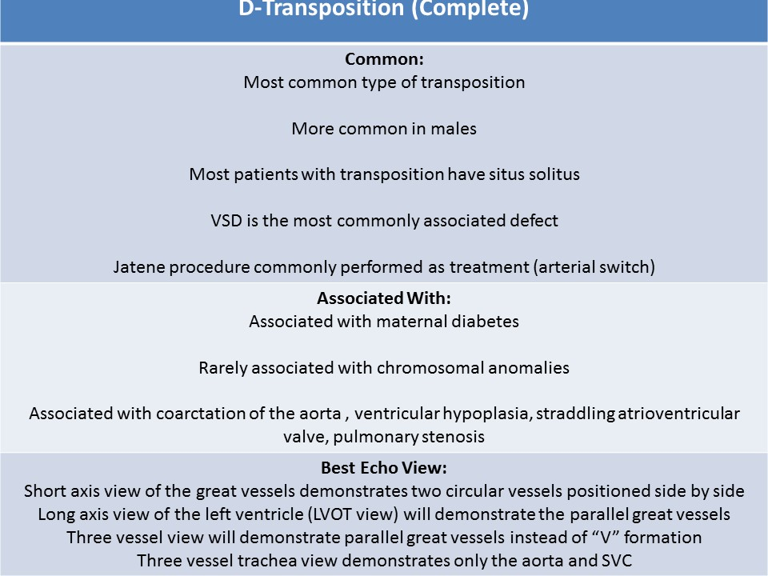
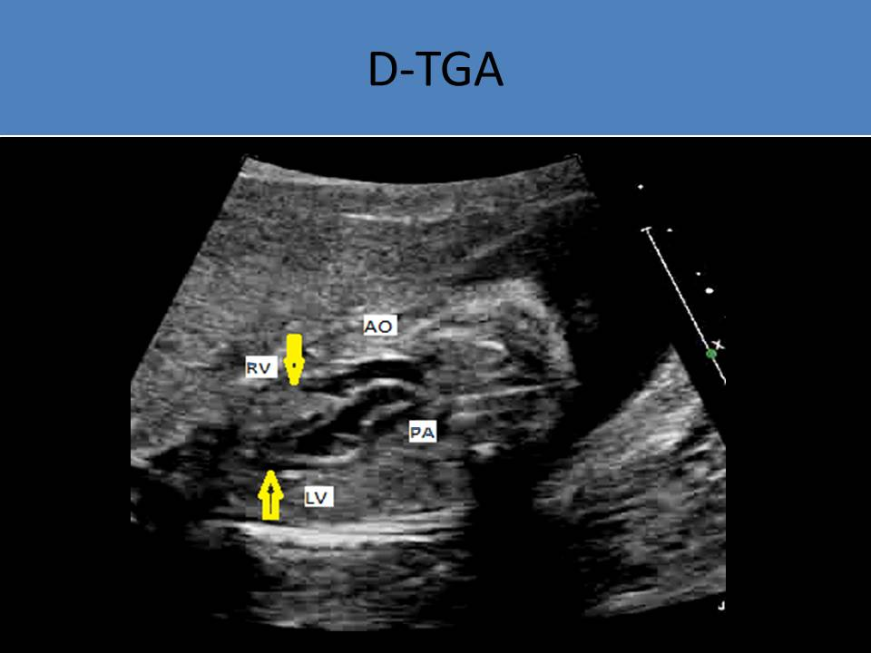
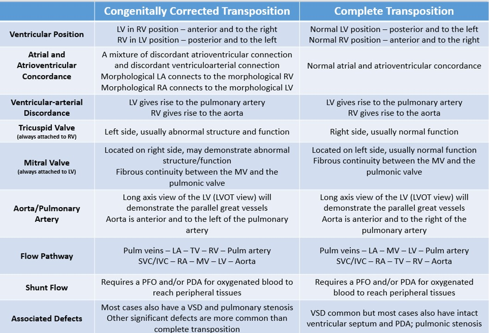

.jpg)
D-Transposition of the Great Arteries
General Information:
- Complete transposition
- Aorta arises from the right ventricle and the pulmonary artery from the left ventricle
- Caused by an abnormality in division of the truncus arteriosus
- 5-8% of congenital heart disease
- Male predominance
- Frequently associated with other cardiac malformations: VSD and pulmonary stenosis are the most common
- Ventricular-arterial discordance
- Commonly missed on prenatal screening
- More common than L-transposition
- Associated with maternal diabetes
- Rarely associated with chromosomal anomalies or other extracardiac abnormalities
- Jatene procedure commonly performed as treatment (arterial switch)

Anatomy and Physiology:- Aorta is anterior and right of the pulmonary artery
- Great vessels in parallel and do not cross as they exit the heart (best Sonographic marker for DTGA)
- Fibrous continuity between the mitral valve and the pulmonic valve ( normal heart: fibrous continuity between the mitral valve and the aortic valve)
- Patency of foramen ovale and the ductus is most important to maintain oxygenation and circulation
- More than half of D-TGA patients have intact ventricular septum and PDA
- Most patients with transposition have situs solitus
- Ventricular septal defect (most common)
- Coarctation of the aorta
- Ventricular hypoplasia
- Straddling atrioventricular valve
- Pulmonary stenosis
- A series of transverse sweeps is preferred for diagnosing transposition
- 4 chamber view
- 5 chamber view
- 3 vessel view
- 3 vessel trachea view
- Normal four chamber view: normal atrial and atrioventricular concordance
- Long axis view of the left ventricle (LVOT view) will demonstrate the parallel great vessels
- Determine morphologic right and left ventricle:
- Left ventricle is smooth walled
- Mitral valve is always associated with the left ventricle
- Right ventricle demonstrates the moderator band
- Tricuspid valve is always associated with the right ventricle
- Tricuspid leaflets have septal attachments but mitral leaflets have no septal attachment
- Tricuspid valve is closer to the cardiac apex than the mitral valve
- Foraminal flap can be identified opening into the left atrium
- Pulmonary artery bifurcates into 2 branches
- Aorta has 3 branches coming off the arch
- Requires imaging of the outflow tracts
- From subcostal four chamber, angle the transducer to the right fetal shoulder - parallel orientation of aorta and pulmonary artery (no criss cross)
- Short axis view of the great vessels - two circular vessels positioned side by side
- Three vessel view - great vessels are parallel (instead of "V" formation)
- Pulmonary artery originates from the left ventricle
- Aorta originates from the right ventricle
- Aorta forms the most cranial arch with superior aspect showing three branches
- Ductal and aortic arch are often parallel
- Pulmonary artery forms a caudal arch through the ductus arteriosus and divides into the right and left pulmonary artery
- The size of foramen ovale should be measured
- With a restrictive foramen ovale, it causes unbalanced atrial shunt mixing and severe desaturation
- Assess the ventricular septum - with posterior malalignment, pulmonary stenosis can occur; with anterior malalignment, subaortic stenosis can occur
- Premature closure of the ductus arteriosus and/or the foramen ovale will diminish prognosis
- After birth, the pressure of the left heart should increase and the pulmonary pressure should decrease
 
Long axis view of the left ventricle shows parallel relationship of the great arteries. The aorta arises from the right ventricle and the pulmonary artery arises from the left ventricle.
The great vessel, arising from the left ventricle, has bifurcation which divided into the right and left pulmonary branches.
The image displays normal four chamber view with d-transposition of the great arteries.
Image of aortic arch and ductal arch. The aortic arch runs parallel to the ductal arch and is superior to the ductal arch. The isthmus region of the aortic arch appears to be hypoplastic
Parallel relationship of the great arteries
Parallel relationship of the great arteries with color Doppler
Page 2: L-Transposition of the Great Arteries